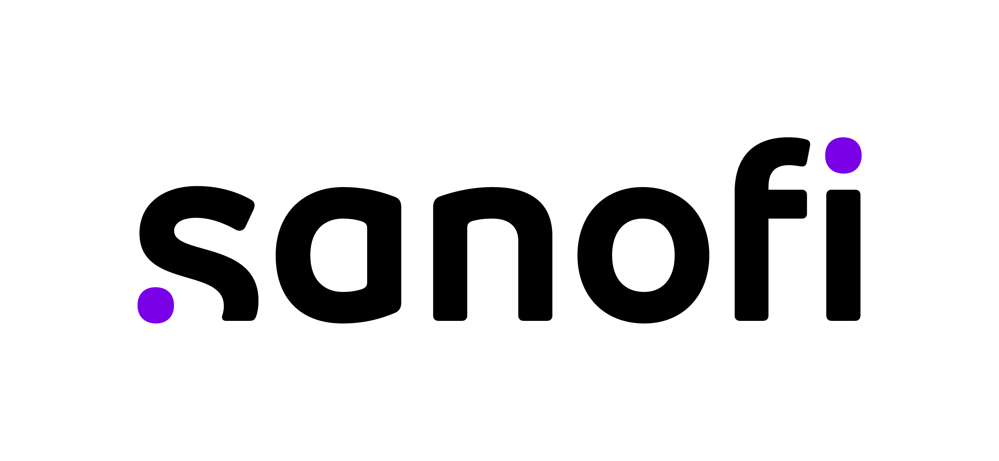
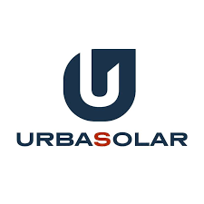

juil. 2023 - aujourd'hui · 8 mois
Jul. 2023 - present · 8 months

Site Data Owner pour construire les pipelines de données de la mesure jusqu'à la visualisation en passant par le stockage et l'extraction dans un Data Lake grâce à l'outil Snowflake.
Biostatisticien pour les différents vaccins au sein de Sanofi Pasteur sur le site de Marcy l'Étoile.
Étroite collaboration avec les sites de Toronto (CA), Swiftwater (US) et Val De Reuil (FR).
Site Data Owner to build data pipelines from measurement to visualization, including storage and extraction in a Data Lake using the Snowflake tool.
Biostatistician for various vaccines within Sanofi Pasteur at the Marcy l'Étoile site.
Close collaboration with sites in Toronto (CA), Swiftwater (US), and Val De Reuil (FR).
août 2022 - juin 2023 · 11 mois
Aug. 2022 - Jun. 2023 · 11 months

Le principal de ma mission consiste en la reconstruction de la puissance des onduleurs et de la données d'irrandiance (GHI) des pyranomètres tout deux installés sur plusieurs centaines de centrales photovoltaïque.
Pour faire cela un travail de Data Cleaning a été primordial, pour ensuite prédire les données grâce à des algorithmes de Machine Learning.
The main part of my mission consists in reconstructing the power of the inverters and the irradiance data (GHI) of the pyranometers both installed on several hundred photovoltaic plants.
To do this, data cleaning was essential, followed by predicting the data using Machine Learning algorithms.
août 2021 - nov. 2021 · 4 mois
Aug. 2021 - Nov. 2021 · 4 months

Développement Python Full-stack : Automatisation des calculs de performance du parc solaire et mise en place d'une procédure automatique de détection de pannes.
Analyse de données massive sur Python en utilisant différentes librairies pour la manipulation et la normalisation des données.
Étude de la performance énergétique des panneaux photovoltaïque fixes monocristallin, polycristallin et bifacial.
Full-stack Python Development: Automation of solar park performance calculations and implementation of an automatic fault detection procedure.
Massive data analysis on Python using various libraries for data manipulation and normalization.
Study of the energy performance of fixed monocrystalline, polycrystalline, and bifacial photovoltaic panels.
oct. 2020 - avr. 2021 · 7 mois
Oct. 2020 - Apr. 2021 · 7 months
Durant mon année de césure j'ai travaillé à Edinburgh Homecare qui fournit des soins indépendants à des personnes atteints de problèmes physiques et/ou de démence.
Services de soins à domicile, souples et professionnels, aidant les personnes à conserver leur indépendance au sein de leur propre foyer et de la communauté locale.
Travail en équipe avec des personnes de toutes nationalités.
During my gap year, I worked at Edinburgh Homecare, which provides independent care for people with physical problems and/or dementia.
Flexible and professional home care services, helping people maintain their independence within their own homes and the local community.
Teamwork with people of all nationalities.
juin 2019 - juil. 2019 · 2 mois
Jun. 2019 - Jul. 2019 · 2 months
La mission principale du stage était d'organiser et de présenter un Hackthon - Dataviz sur la résilience.
Découverte du fonctionnement et de l'historique complet des panneaux solaires.
Le stage portait également sur le développement du site internet sur WordPress afin de rajouter du contenu et des fonctionnalités, ainsi que la réécriture d'articles environnementaux.
The main task of the internship was to organize and present a Hackathon - Dataviz on resilience.
Discovering the operation and complete history of solar panels.
The internship also involved developing the website on WordPress to add content and features, as well as rewriting environmental articles.
juin 2018 - août 2018 · 3 mois
Jun. 2018 - Aug. 2018 · 3 months
Ouvrier polyvalent sur la fabrication de circuits secondaire de fours à arc en tube de cuivre refroidis par eau pour le transport des courants à haute tension.
Fabrication de gaines à barres de puissance isolée dans la résine et fabrication de câbles refroidis par eau.
Soudage du cuivre, brasage à l'argent, étude du fonctionnement mécanique des machines.
Versatile worker on the manufacture of secondary circuits of arc furnaces in copper tubes cooled by water for the transport of high voltage currents.
Manufacture of resin-insulated power bar ducts and manufacture of water-cooled cables.
Copper welding, silver soldering, study of the mechanical operation of the machines.